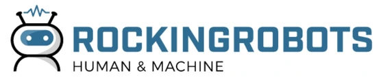

Booting MuJoCo · WebAssembly
0%
Simulation unavailable
This browser couldn't start the live MuJoCo simulation (it needs WebGL and WebAssembly).
Live · MuJoCo 3.14 · WebAssembly
Autopilot
Starting
Hover to steer · click a block to grasp it · drag blocks to throw · drag the arm to move itAutonomous demo · interactive on desktop
PhD Student · CU Boulder
Jay Vakil
I work on robot learning, mobile manipulation, and embodied AI, building intelligent agents that interact robustly with the physical world.
I'm a Computer Science PhD student at the University of Colorado Boulder, advised by Alessandro Roncone. Before my PhD, I was a Robotics Research Engineer at Meta AI (FAIR), where I contributed to large-scale initiatives such as RT-X, RoboAgent, and OK-Robot.
Publications
Google Scholar* equal contribution · † equal advising
Dynamics-Compliant Trajectory Diffusion
Payload-conditioned diffusion model for generating dynamic motions for robots handling up to 3× nominal payloads.
Open X-Embodiment: Robotic Learning Datasets and RT-X Models
Scaling robotic learning via the RT-X model and a massive cross-platform dataset of 60+ robots. The ‘ImageNet’ moment for robotics.
RoboAgent: Generalization and Efficiency in Robot Manipulation via Semantic Augmentations and Action Chunking
Universal robot learning with semantic augmentations. Teaching robots broadly generalizable skills through action chunking across 38+ tasks.
OK-Robot: What Really Matters in Integrating Open-Knowledge Models for Robotics
A zero-shot system for open-vocabulary mobile manipulation. Integrating vision-language models with classical navigation primitives to handle messy environments.
What do we learn from a large-scale study of pre-trained visual representations in sim and real environments?
A large-scale study of pre-trained visual representations in sim and real environments to understand transfer efficacy.
Towards Open-World Mobile Manipulation in Homes: Lessons from the NeurIPS 2023 HomeRobot Open Vocabulary Mobile Manipulation Challenge
Open-vocabulary mobile manipulation challenge. Benchmarking robot performance in novel home environments.
Where are we in the search for an Artificial Visual Cortex for Embodied Intelligence?
Evaluating mid-level visual representations for robotic control tasks. Are we closer to an artificial visual cortex?
RoboHive: A Unified Framework for Robot Learning
A unified framework for robot learning and embodied AI research, offering diverse simulation environments.
Spatial-Language Attention Policies for Efficient Robot Learning
Efficient robot learning using spatial-language attention mechanisms for manipulation tasks.
Education & experience
-
MyoLab.AI
Feb 2025 – May 2025Research Scientist Intern
Multimodal LLM-agent planning, diffusion-based human-motion synthesis, and generative modeling on human-motion manifolds.
-
University of Colorado Boulder
Aug 2024 – PresentPhD in Computer Science
Researching robot learning, mobile manipulation, and embodied AI. Advised by Alessandro Roncone, Nikolaus Correll, and Christoffer Heckman.
-
Meta AI (FAIR)
Apr 2022 – Jul 2024Robotics Research Engineer
Designed a distributed robotic arm cluster for large-scale experimentation. Developed universal agents for complex manipulation tasks (RoboAgent).
-
University of Washington
Sep 2018 – Mar 2022BS in Electrical Engineering
Minor in Mathematics and Computer Science. Dean's List recipient. Focus on signal processing, robotics, and embedded systems.
In the news
TechCrunchHuman toddlers are inspiring new approaches to robot learning
MIT Technology ReviewThis robot can tidy a room without any help
IEEE SpectrumThe global project to make a general robotic brain
MIT Technology ReviewIs robotics about to have its own ChatGPT moment?
Fox NewsStop loading the dishwasher: this robot aims to do all the cleanup for you
VentureBeat
VentureBeatMeta's OK-Robot performs zero-shot pick-and-drop in unseen environments
IEEE SpectrumFeatured in Video Friday
Carnegie Mellon UniversityParenting a 3-year-old robot
CMU Robotics InstituteParenting a 3-year-old robot
HackadayRoboAgent gets its MT-ACT together
Communications of the ACMParenting a three-year-old robot
Meta AI BlogRobots that learn from videos of human activities and simulated interactions
Meta AIWhere are we in the search for an artificial visual cortex for embodied intelligence?

Rocking RobotsRoboAgent, modeled after human infants' learning techniques StudyFindsMeta AI training robots like babies Tech BriefsMeet RoboAgent: enabling robots to acquire manipulation abilitiesTeaching & service
Teaching Assistant
- CSCI 3302Introduction to Robotics
- CSCI 3202Introduction to Artificial Intelligence
- CSCI 2400Computer Systems
University of Colorado Boulder · 2024 – Present
Reviewer
- 2026
- 2025
- 2024
- Journal
- Workshops